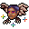

チョンチョン Chonchon
英語版 CrawlWiki の記事「Chonchon」(0.34 向け、2026-05-22 版)の翻訳です。原文の著者は編集履歴をご覧ください。
| チョンチョン x  | |
|---|---|
| HP | 41-84 |
| HD | 14 |
| XP | 1250 |
| 速度 | 20(呪文: 200%) |
| AC | 6 |
| EV | 16 |
| 意志力 | 60 |
| 攻撃1 | 32（頭突き: 混沌） |
| 攻撃2 | 28（噛みつき: 吸血）
|
| 耐性 | なし |
| 弱点 | 銀 |
| 生息地 | 陸上 |
| 知能 | 人間並み |
| 使用 | 何も使わない |
| 分類 | 生物 |
| 体格 | 極小 |
| 種類 | チョンチョン、チョンチョン |
| フラグ | 飛行 コウモリのように飛び回る 温血 変化不可 邪悪 |

| 不浄の領域やアンデッドの姿にほとんど関心を持たず、残酷な混沌の気まぐれに力を求める魔術師もいる。この不吉な、フクロウの翼を持つ頭部は、かつての大魔術師の成れの果てだ。新たな空飛ぶ姿となったこれは、不幸を撒き散らし、血を啜ることを喜びとしている。
(著作権のある引用のため本文は省略) |
基本情報
チョンチョンは、空飛ぶ頭だけのコウモリのようなモンスターで、深層でときどき見かける。吸血と混沌の追加効果を持つ攻撃のほか、あなたを手前に引き寄せる能力も持っている。
呪文
小技
- 敵がひしめく深層では、引き寄せの疾風は打たれ弱いキャラクターをあっさり死に追いやりかねない。だからチョンチョンはできるだけ早く始末したほうがよい。幸い、HP はそれほど多くない。
変更履歴
- チョンチョンは0.34で追加された。